<div class="textcontainer">
<p class="margin"> </p>
<h3>Week 8: CNC Milling</h3>
<p class="margin"> </p>
<div class="flexrow">
<a id="btn" href="wk8.zip" download>Download my files from this week!
</a>
</div>
<p class="margin"></p>
<h4>Assignment: Make Something With CNC</h4>
This week, I wanted to spend more time on the CNC machining aspect of the
assignment than on designing, so I went on Thingiverse and looked for things
that could be fabricated on the ShopBot. I found
<a href="https://www.thingiverse.com/thing:1685933">this</a> model of a
laptop / tablet stand interesting, especially since it's adjustable to different
heights. Before I could just open up the file in Aspire, I had to make sure the
scale was correct, so I brought it into Adobe Illustrator. I found that none of
the vector paths were closed (instead, they were just discrete points), so I
connected those and then made sure the scale of the stand would work with the
hardware I was planning to use (M5 screws and nuts, mainly).
<p class="margin"> </p>
<div class="class\">
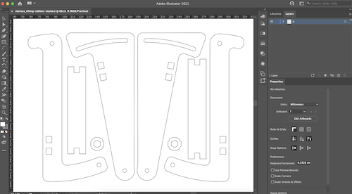
</div>
<p class="caption"></p>
At first, I was running into odd behavior when defining toolpaths for the shape
in Aspire, but eventually, with the help of the TAs, I managed to figure out
that I had forgotten to close one of the vector paths. Once I fixed that, I was
able to define all the tool paths in Aspire and cut out the parts on the ShopBot.
The cutting bit was far scarier than I was anticipating!
<p class="margin"> </p>
<div class="flexrow">
<video controls>
<source src="./milling.mov" type="video/mov">
</video>
</div>
<div class="flexrow">
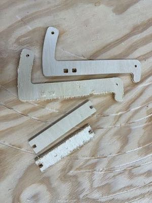
</div>
<p class="caption">The ShopBot was an efficient choice for cutting the pieces out of plywood.</p>
The next step was to process the pieces and fit it all together. The cutting bit
splintered the outer layers of the plywood a little, so I used some sandpaper to
smooth them out. The wooden stubs on the ends of the crosspieces were too large to
fit into the holes cut for them, so I cut them down a little on the bandsaw. I
cut down a small dowel to use as a crosspiece for the hinge at the bottom, then
fit all the pieces together.
<p class="margin"> </p>
<div class="flexrow">
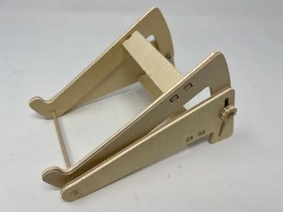
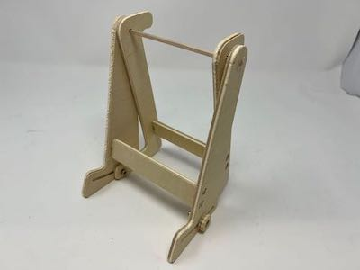
</div>
<div class="flexrow">
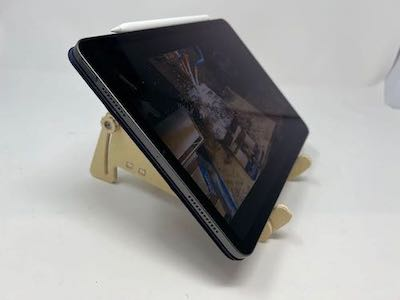
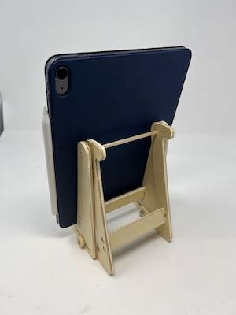
</div>
<p class="caption">Photos of the table stand showing its various use cases.</p>
<p class="margin"> </p>
<p class="margin"> </p>
<div class="flexrow">
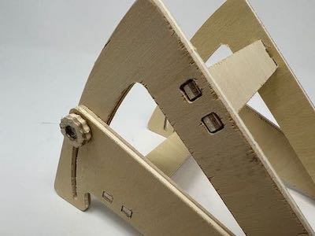
<img src="stand-detail5.jpeg" alt="">
</div>
<div class="flexrow">
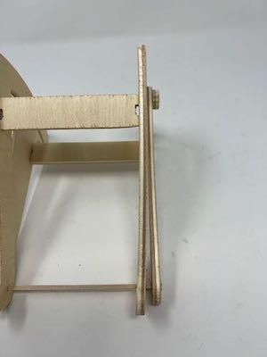
</div>
<p class="caption">Here you can see the details of how the stand fits together, as well as the warped side piece.</p>
The final stand is adjustable to a range of angles and can be used both vertically
and horizontally. One of the pieces of plywoood is a little warped, so the edge
isn't quite straight, but it's not enough of a defect to make the stand unusable.
I sanded down all the edges more and used some black wood stain to make the stand
look a little nicer; I didn't want it to be pure black, so instead of letting the
stain soak in for the recommended time I wiped the excess off right after I was done
painting it on, which left me with a cool, charcoal kind of look.
<p class="margin"> </p>
<div class="flexrow">
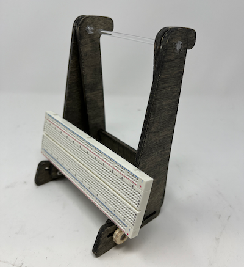
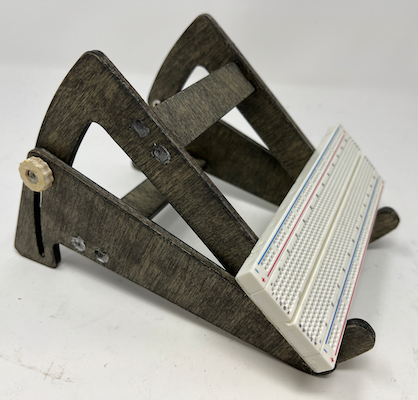
</div>
<div class="flexrow">
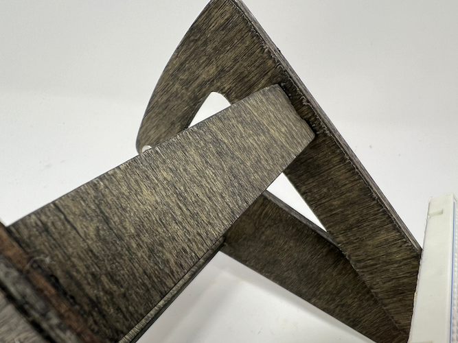
</div>
<p class="caption">Some images of the completed tablet stand.</p>
</div>